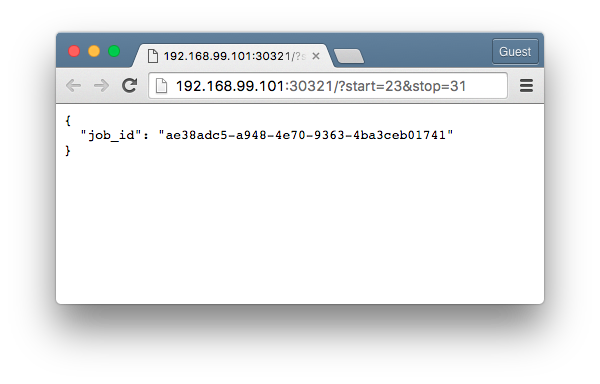
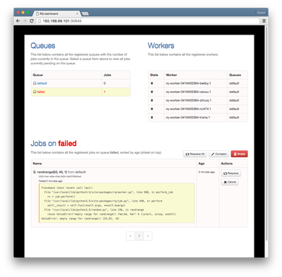

Deploy Flask with a Celery task queue and Flower dashboard using Kubernetes
In this article, we walkthrough the steps to deploy a simple Flask app integrated with Celery, an asynchronous task queue based on message passing. It makes uses RabbitMQ and/or Redis as the message broker and results backend, which can be cumbersome to provision and orchestrate. We use Kubernetes to ease the management of the various deployments and services required in our stack, which leaves us more time to focus on coding and less on DevOps.

Contents
1 Getting Started
This guide assumes some familiarity with Flask integrated with Celery and focuses more on provisioning the various components using Docker and Kubernetes.
The post Using Celery With Flask by @miguelgrinberg and the Celery Based Background Tasks page in the Flask official docs provide good starting points and should get you up to speed fairly quickly.
Let's start by creating and navigating to the directory to contain artifacts relevant to this deployment:
$ mkdir flask-celery $ cd flask-celery
2 Deploy the RabbitMQ Message Broker
https://hub.docker.com/_/rabbitmq/
$ kubectl run rabbitmq --image=rabbitmq:3.6.2-management --replicas=1 --port=5672 \ > --dry-run --output=yaml > rabbitmq-deployment.yaml $ kubectl create -f rabbitmq-deployment.yaml
apiVersion: extensions/v1beta1 kind: Deployment metadata: creationTimestamp: null labels: run: rabbitmq name: rabbitmq spec: replicas: 1 selector: matchLabels: run: rabbitmq strategy: {} template: metadata: creationTimestamp: null labels: run: rabbitmq spec: containers: - image: rabbitmq:3.6.2-management name: rabbitmq ports: - containerPort: 5672 - containerPort: 15672 resources: {} status: {}
$ kubectl expose deployment rabbitmq --type=NodePort \ > --dry-run --output=yaml > rabbitmq-service.yaml $ kubectl create -f rabbitmq-service.yaml
3 Deploy the Redis Results Backend
https://hub.docker.com/_/redis/
$ kubectl run redis-server --image=redis --replicas=1 --port=6379 \ > --dry-run --output=yaml > redis-server-deployment.yaml $ kubectl create -f redis-server-deployment.yaml $ kubectl expose deployment redis-server --dry-run --output=yaml > redis-server-service.yaml $ kubectl create -f redis-server-service.yaml
4 Deploy the Flask web app
$ mkdir web-flask
4.1 requirements.txt
$ cat > web-flask/requirements.txt flask redis rq
4.2 settings.py
$ $EDITOR web-flask/settings.py
import os REDIS_HOST = os.environ['REDIS_MASTER_SERVICE_HOST'] \ if os.environ.get('GET_HOSTS_FROM', '') == 'env' else 'redis-master' REDIS_PORT = 6379
4.3 app.py
$ $EDITOR web-flask/app.py
from flask import Flask, jsonify, request from redis import StrictRedis from rq import Queue from random import randrange from settings import REDIS_HOST, REDIS_PORT app = Flask(__name__) q = Queue(connection=StrictRedis(host=REDIS_HOST, port=REDIS_PORT)) @app.route('/') def get_randrange(): if 'stop' in request.args: stop = int(request.args.get('stop')) start = int(request.args.get('start', 0)) step = int(request.args.get('step', 1)) job = q.enqueue(randrange, start, stop, step, result_ttl=5000) return jsonify(job_id=job.get_id()) return 'Stop value not specified!', 400 @app.route("/results") @app.route("/results/<string:job_id>") def get_results(job_id=None): if job_id is None: return jsonify(queued_job_ids=q.job_ids) job = q.fetch_job(job_id) if job.is_failed: return 'Job has failed!', 400 if job.is_finished: return jsonify(result=job.result) return 'Job has not finished!', 202 if __name__ == '__main__': # Start server app.run(host='0.0.0.0', port=8080, debug=True)
4.4 Dockerfile
$ $EDITOR web-flask/Dockerfile
Attention!
Not suitable for production!
FROM python:3.5.1-onbuild EXPOSE 8080 CMD ["python", "app.py"]
$ docker build -t tiao/web-flask-rq:v1 web-flask
$ kubectl run web-flask --image=tiao/web-flask-rq:v1 --replicas=1 --port=8080 \ > --labels='app=flask,tier=frontend' \ > --requests='cpu=100m,memory=100Mi' \ > --env="GET_HOSTS_FROM=dns" \ > --dry-run --output=yaml > web-flask-deployment.yaml
4.5 web-flask-deployment.yaml
apiVersion: extensions/v1beta1 kind: Deployment metadata: creationTimestamp: null labels: app: flask tier: frontend name: web-flask spec: replicas: 1 selector: matchLabels: app: flask tier: frontend strategy: {} template: metadata: creationTimestamp: null labels: app: flask tier: frontend spec: containers: - env: - name: GET_HOSTS_FROM value: dns image: tiao/web-flask-rq:v1 name: web-flask ports: - containerPort: 8080 resources: requests: cpu: 100m memory: 100Mi status: {}
$ kubectl create -f web-flask-deployment.yaml deployment "web-flask" created
$ kubectl expose deployment web-flask --selector='app=flask,tier=frontend' --type=NodePort \ > --dry-run --output=yaml > web-flask-service.yaml
4.6 web-flask-service.yaml
apiVersion: v1 kind: Service metadata: creationTimestamp: null labels: app: flask tier: frontend name: web-flask spec: ports: - port: 8080 protocol: TCP targetPort: 8080 selector: app: flask tier: frontend type: NodePort status: loadBalancer: {}
$ kubectl create -f web-flask-service.yaml You have exposed your service on an external port on all nodes in your cluster. If you want to expose this service to the external internet, you may need to set up firewall rules for the service port(s) (tcp:30321) to serve traffic. See http://releases.k8s.io/release-1.2/docs/user-guide/services-firewalls.md for more details. service "web-flask" created
5 Deploy the Redis Queue (RQ) workers
$ mkdir rq-worker
5.1 Dockerfile
FROM tiao/web-flask-rq:v1 CMD ["rq", "worker", "--config", "settings"]
$ docker build -t tiao/rq-worker:v1 rq-worker
$ kubectl run rq-worker --image=tiao/rq-worker:v1 --replicas=5 \ > --labels="app=rq,role=worker,tier=backend" \ > --requests="cpu=100m,memory=100Mi" \ > --env="GET_HOSTS_FROM=dns" \ > --dry-run --output=yaml > rq-worker-deployment.yaml
5.2 rq-worker-deployment.yaml
apiVersion: extensions/v1beta1 kind: Deployment metadata: creationTimestamp: null labels: app: redis role: worker tier: backend name: rq-worker spec: replicas: 5 selector: matchLabels: app: redis role: worker tier: backend strategy: {} template: metadata: creationTimestamp: null labels: app: redis role: worker tier: backend spec: containers: - env: - name: GET_HOSTS_FROM value: dns image: tiao/rq-worker:v1 name: rq-worker resources: requests: cpu: 100m memory: 100Mi status: {}
$ kubectl create -f rq-worker-deployment.yaml deployment "rq-worker" created
6 Testing it out
We make make use of JSONPath support in the kubectl tool to query the NodePort for our web-flask service:
$ kubectl get service web-flask --output='jsonpath={.spec.ports[0].NodePort}' 30321% $ port=$(kubectl get service web-flask --output='jsonpath={.spec.ports[0].NodePort}')
We construct the address for ease of reference later on:
$ address="$(minikube ip):$port" $ echo $address 192.168.99.101:31637
$ open "http://${address}/?start=23&stop=31"
$ curl "http://${address}/?start=41&stop=45" { "job_id": "cc31bdcd-ad31-41ce-b516-2b90cd92f2a1" } $ curl "http://${address}/?start=41&stop=45" | jq '.job_id' "cc31bdcd-ad31-41ce-b516-2b90cd92f2a1"
$ curl "http://${address}/results/cc31bdcd-ad31-41ce-b516-2b90cd92f2a1" { "result": 43 } $ curl "http://${address}/results/cc31bdcd-ad31-41ce-b516-2b90cd92f2a1" | jq '.result' 43
$ curl "http://${address}/?start=53&stop=45" | jq '.job_id' "252b14a4-4a9e-45eb-8834-9e2078fb94ed" $ curl "http://${address}/results/252b14a4-4a9e-45eb-8834-9e2078fb94ed" Job has failed!%
7 RQ Dashboard (Optional)
$ mkdir rq-dashboard
7.1 requirements.txt
$ echo rq-dashboard > rq-dashboard/requirements.txt
7.2 Dockerfile
$ $EDITOR rq-dashboard/Dockerfile
FROM python:3.5.1-onbuild EXPOSE 9181 CMD ["rq-dashboard", "--port", "9181", \ "--redis-host", "redis-master", \ "--redis-port", "6379"]
$ docker build -t tiao/rq-dashboard:v1 rq-dashboard
$ kubectl run rq-dashboard --image=tiao/rq-dashboard:v1 --replicas=1 --port=9181 \ > --labels='app=rq,role=dashboard,tier=frontend' \ > --requests='cpu=100m,memory=100Mi' \ > --env="GET_HOSTS_FROM=env" \ > --dry-run --output=yaml > rq-dashboard-deployment.yaml
7.3 rq-dashboard-deployment.yaml
apiVersion: extensions/v1beta1 kind: Deployment metadata: creationTimestamp: null labels: app: rq role: dashboard tier: frontend name: rq-dashboard spec: replicas: 1 selector: matchLabels: app: rq role: dashboard tier: frontend strategy: {} template: metadata: creationTimestamp: null labels: app: rq role: dashboard tier: frontend spec: containers: - env: - name: GET_HOSTS_FROM value: env image: tiao/rq-dashboard:v1 name: rq-dashboard ports: - containerPort: 9181 resources: requests: cpu: 100m memory: 100Mi status: {}
$ kubectl create -f rq-dashboard-deployment.yaml deployment "rq-dashboard" created
$ kubectl expose deployment rq-dashboard --selector='app=rq,role=dashboard,tier=frontend' --type=NodePort \ > --dry-run --output=yaml > rq-dashboard-service.yaml
7.4 rq-dashboard-service.yaml
apiVersion: v1 kind: Service metadata: creationTimestamp: null labels: app: rq role: dashboard tier: frontend name: rq-dashboard spec: ports: - port: 9181 protocol: TCP targetPort: 9181 selector: app: rq role: dashboard tier: frontend type: NodePort status: loadBalancer: {}
$ kubectl create -f rq-dashboard-service.yaml You have exposed your service on an external port on all nodes in your cluster. If you want to expose this service to the external internet, you may need to set up firewall rules for the service port(s) (tcp:30645) to serve traffic. See http://releases.k8s.io/release-1.2/docs/user-guide/services-firewalls.md for more details. service "rq-dashboard" created
$ open "http://$(minikube ip):$(kubectl get service rq-dashboard --output='jsonpath={.spec.ports[0].NodePort}')"
{kind=link}
$ kubectl get pods NAME READY STATUS RESTARTS AGE redis-master-2576299852-iwf15 1/1 Running 0 52m rq-dashboard-1288919851-n10qs 1/1 Running 0 20m rq-worker-3416405364-bekby 1/1 Running 0 45m rq-worker-3416405364-cecxu 1/1 Running 0 45m rq-worker-3416405364-lnxha 1/1 Running 0 45m rq-worker-3416405364-nc474 1/1 Running 0 45m rq-worker-3416405364-ztmuq 1/1 Running 0 45m web-flask-338777398-21dli 1/1 Running 0 47m
7.5 Alternative Solution: Integrate the Dashboard in our Flask app
diff --git a/web-flask/app.py b/web-flask/app.py index af6ec48..ec7c1cd 100644 --- a/web-flask/app.py +++ b/web-flask/app.py @@ -4,12 +4,16 @@ from rq import Queue from random import randrange -from settings import REDIS_HOST, REDIS_PORT - +import rq_dashboard +import settings app = Flask(__name__) +app.config.from_object(rq_dashboard.default_settings) +app.config.from_object(settings) +app.register_blueprint(rq_dashboard.blueprint, url_prefix='/dashboard') -q = Queue(connection=StrictRedis(host=REDIS_HOST, port=REDIS_PORT)) +q = Queue(connection=StrictRedis(host=settings.REDIS_HOST, + port=settings.REDIS_PORT))
diff --git a/web-flask/requirements.txt b/web-flask/requirements.txt index 17dba2a..fcb5d58 100644 --- a/web-flask/requirements.txt +++ b/web-flask/requirements.txt @@ -1,3 +1,4 @@ flask redis rq +rq-dashboard
$ docker build -t tiao/web-flask-rq:v2 web-flask
diff --git a/web-flask-deployment.yaml b/web-flask-deployment.yaml index a4524e6..2dc5356 100644 --- a/web-flask-deployment.yaml +++ b/web-flask-deployment.yaml @@ -24,7 +24,7 @@ spec: - env: - name: GET_HOSTS_FROM value: dns - image: tiao/web-flask-rq:v1 + image: tiao/web-flask-rq:v2 name: web-flask ports: - containerPort: 8080
$ kubectl apply -f web-flask-deployment.yaml deployment "web-flask" configured
$ kubectl get deployment web-flask --output='jsonpath={.spec.template.spec.containers[*].image}' tiao/web-flask-rq:v2%
$ open "http://${address}/dashboard"
{kind=link}
Comments
Comments powered by Disqus